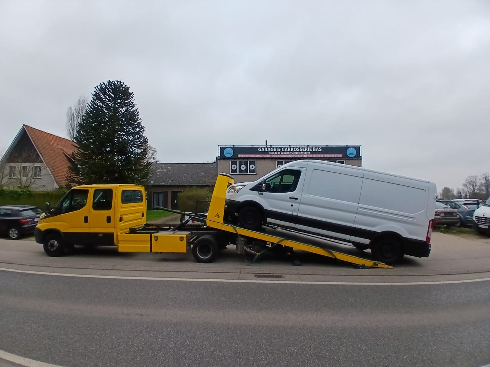
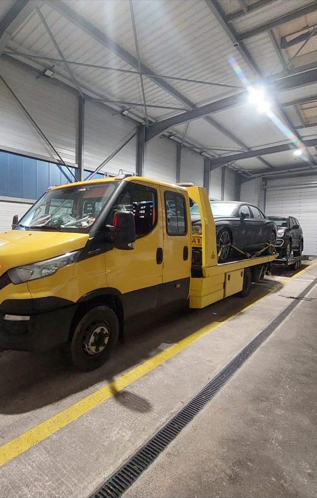

Sleepdienst Bergen op Zoom
snel ter plaatse, 24/7.
Auto stuk in Bergen op Zoom? Wij staan dag en nacht voor u klaar.
Faster sleept uw auto of bestelbus in Bergen op Zoom en omgeving naar uw garage, naar huis of naar elk ander adres. Bij spoed zijn we vaak binnen 30 minuten bij u. U hoort vooraf een vaste, scherpe prijs, vanaf €125. Geen abonnement, geen verrassingen achteraf.

* Bij dringende oproepen vaak mogelijk, afhankelijk van uw locatie en het verkeer. U hoort bij het bellen hoe snel we er kunnen zijn.
Sleepdienst Bergen op Zoom: wegen en knelpunten
Bergen op Zoom ligt aan de A4 en de A58. De A58 komt van Roosendaal en loopt verder naar Zeeland, naar Goes en Vlissingen. De A4 loopt naar het noorden richting Steenbergen en Dinteloord, en naar het zuiden richting Woensdrecht en Ossendrecht.
Op de A58 richting Zeeland rijdt in de zomer veel vakantieverkeer, ook met caravans.
Auto slepen in Bergen op Zoom: goed om te weten
Vliegbasis en industrie. Rond de vliegbasis Woensdrecht en de bedrijventerreinen langs de A4 en A58 staan veel bedrijfsauto’s. Pech met een bus? Wij slepen ook bestelbussen.
Wijken en omgeving. Ook in Halsteren, Lepelstraat, Borgvliet, Steenbergen, Woensdrecht en Hoogerheide halen we auto’s op.
Waarvoor kunt u ons bellen?
Wij zijn in de eerste plaats een sleepdienst. Kan het ter plaatse opgelost worden, dan doen we dat ook.
Auto slepen
Uw auto rijdt niet meer? Wij zetten hem op het plateau en brengen hem naar het adres dat u kiest.
Meer info →02Pechhulp
Lege accu of lekke band? Als het ter plaatse kan, lossen we het op. Lukt dat niet, dan slepen we.
Meer info →03Slepen na een ongeval
Na een aanrijding brengen we de auto naar het schadebedrijf of de garage die u zelf kiest.
Meer info →04Bestelbus slepen
Een bestelbus die stilstaat kost geld. We halen de bus op en brengen hem naar uw garage of bedrijf.
Meer info →05Elektrische auto slepen
Een elektrische auto mag niet met de wielen over de weg gesleept worden. Wij vervoeren hem altijd op het plateau.
Meer info →06Autotransport
Een auto gekocht, verkocht of naar de sloop? We vervoeren hem op afspraak, ook als hij niet rijdt.
Meer info →In drie stappen geholpen
Geen ingewikkelde procedure. Eén telefoontje of WhatsApp is genoeg.
- Bel of WhatsAppVertel waar de auto staat, wat er aan de hand is en waar hij naartoe moet. Deel uw locatie in WhatsApp, dan vinden we u meteen.
- Vaste prijs voorafU hoort direct wat de rit kost. Pas als u akkoord bent, vertrekt de sleepwagen.
- Wij slepen, u rijdt meeDe auto gaat veilig op het plateau en wordt vastgezet. Wij brengen hem naar het adres dat u kiest.
Geen stockfoto’s, eigen sleepwagens
Dit is ons materieel en dit zijn echte opdrachten.


Wat klanten over Faster zeggen
Echte Google-reviews, geen verzonnen teksten.
“Ik stond stil op de snelweg, het was zeer gevaarlijk met mijn vrouw en kinderen. Was heel snel ter plaatse en de goedkoopste die er was op dat moment.”
“Ik was absoluut perfect geholpen door een uiterst vriendelijke en aangename chauffeur. Het was ook zeer goed door dispatch georganiseerd en de prijs viel ook mee.”
“Super snel opkomen dagen en de prijs was zoals afgesproken, geen gefoefel.”
“Iemand die zijn job goed kent, zeer vriendelijke chauffeur, professioneel geholpen, bedankt om snel te zijn 👍”
“Zeer tevreden, zeer goede service.”
“Zeer tevreden, binnen de 15 minuten waren ze al aanwezig en qua prijs is dit gewoon de max!!! Zeker een aanrader!!!”
Antwoorden voordat u belt
Hoe snel is de sleepdienst in Bergen op Zoom er?
Bij spoed zijn we vaak binnen 30 minuten bij u, afhankelijk van waar u staat en het verkeer. Bij het bellen hoort u hoe snel we er kunnen zijn.
Wat kost een sleepdienst in Bergen op Zoom?
Een korte rit begint vanaf €125. De vaste prijs hangt af van de afstand, het voertuig en het tijdstip, en u hoort hem vooraf.
Heb ik een abonnement nodig?
Nee. U betaalt per rit, zonder lidmaatschap of pechhulppas.
Waar brengen jullie mijn auto naartoe?
Waar u wilt: uw eigen garage, uw huis, de dealer of een schadebedrijf.
Staat uw auto stil?
Bel of stuur een WhatsApp met uw locatie. Dag en nacht, ook in het weekend.